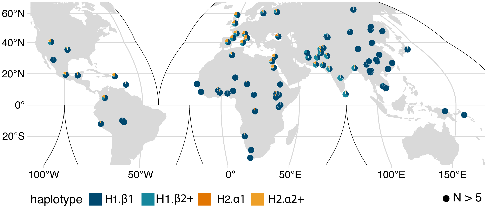

<title>Research — Samvardhini Sridharan</title>
<meta charset="utf-8">
<meta name="viewport" content="width=device-width, initial-scale=1">
<link rel="stylesheet" href="style.css?v=2">

<header class="site-nav">
  <div class="brand">Samvardhini Sridharan</div>
  <nav>
    <ul>
      <li><a href="index.html">Home</a></li>
      <li><a href="research.html" class="active">Research</a></li>
      <li><a href="publications.html">Publications</a></li>
      <li><a href="teaching.html">Teaching</a></li>
      <li><a href="science-communication.html">Science Communication</a></li>
      <li><a href="beyond-the-lab.html">Beyond the Lab</a></li>
      <li><a href="cv.html">CV</a></li>
    </ul>
  </nav>
</header>

<main>
  <div class="hero" style="padding-bottom:0;">
    <div>
      <h1>Research</h1>
    </div>
  </div>

  <section class="card">
    <h2>Current work</h2>
    <p>I am developing a genome-wide reference panel and imputation framework for chromosomal inversions &mdash; an understudied class of structural variation that is copy-number neutral yet reversed in sequence orientation. Inversions disrupt genes, alter regulatory architecture, and suppress recombination, with disease consequences exemplified by the 17q21.31 locus, where inversion haplotypes are associated with Koolen-de Vries syndrome susceptibility and variation in fecundity and recombination rate. Most inversions, however, are poorly represented in the imputation panels that make GWAS possible, in part because many arise recurrently at loci flanked by segmental duplications whose breakpoints short-read sequencing cannot resolve.</p>
    <p>To address this, I've collated several long-read haplotypes to resolve structural variation across complex, medically relevant inversion loci genome-wide, including many regions previously unreported due to their complexity. Classifying the largest callset of large (&gt;5kb) inversions to date by breakpoint architecture shows that most are recurrent, arising within overlapping duplicated regions rather than as unique events. To account for the many SNPs that only imperfectly tag these recurrent inversions, I've developed a Hidden Markov Model (HMM)-based approach that models haplotype structure to enable robust imputation of inversions even at recurrent loci. I plan to apply this framework to impute common balanced inversions into the UK Biobank and <em>All of Us</em> (~1 million samples combined) to enable disease association studies. As a case study, I've used the complex 17q21.31 locus to identify tag SNPs for future investigation.</p>

    <h2>Previous work</h2>
    <p>My dissertation research integrated pangenomics, primate comparative genomics, population genetics, and ancient DNA to characterize structural haplotype diversity at the 17q21.31 locus, a region with extensive structural variation linked to Koolen-de Vries syndrome susceptibility, fecundity, and recombination rate.</p>
    <p>Using pangenome graph-based approaches applied to a large panel of haplotype-resolved human genome assemblies, I resolved a range of distinct structural haplotypes at the locus, several not previously described. Applying this framework to primates provided evolutionary context: I characterized an independent, more recently evolved inversion in chimpanzees that spans a larger region than its human counterpart. Population genetic analyses, using sequencing data from populations worldwide, mapped global haplotype frequencies and identified recombination events between inverted and non-inverted haplotypes that had not previously been documented. Incorporating ancient DNA quantified how the frequency of one of these haplotypes has changed across Europe over thousands of years, linking present-day population patterns to their evolutionary history.</p>
    <p>Together, these approaches connect structural variation at the locus across evolutionary, population, and temporal scales.</p>

    <div class="fig-wrap">
      <a href="https://www.nature.com/articles/s41467-026-73174-1" target="_blank" rel="noopener" aria-label="Read the paper in Nature Communications">
        
      </a>
      <p class="fig-caption">World map indicating the frequency of direct H1.&beta;1, H1.&beta;2+ and inverted H2.&alpha;1 and H2.&alpha;2+ 17q21.31 haplotypes in 4,585 individuals from 193 populations. Figure 4A, from Sridharan et al., <em>Nature Communications</em> (2026).</p>
    </div>

    <h2>Where this is headed</h2>
    <p>My broader research program centers on incorporating structural variants into GWAS to better understand their role in human health and disease outcomes. Long-read sequencing and pangenome resources form the backbone of this work, and I'm especially drawn to extending it comparatively into primates, using structural variation in great apes to sharpen what we can learn about disease risk and genome function in humans.</p>
  </section>
</main>

<footer class="site-footer">
  &copy; <span id="year"></span> Samvardhini Sridharan
</footer>
<script>document.getElementById("year").textContent = new Date().getFullYear();</script>
